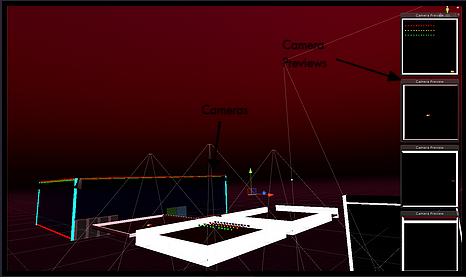
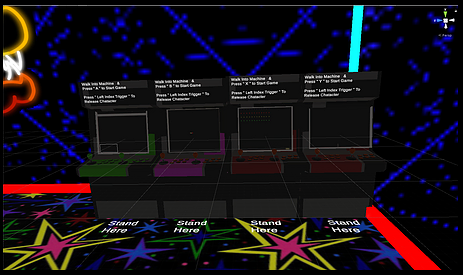

The arcade space is an environment that the player can navigate and interact with multiple objects, animated characters
and any of the 4 retro arcade machines placed in the scene.
Mini-Games
In order for me to be able to call it an arcade, i had to find a way of bringing some retro classics into the virtual
space. I decided that i would not be able to emulate any of the games because it came across as being too challenging
for the specified time frame, so i decided I would code simplified variations of four chosen games (Brick-breaker,
Snake, Space Invaders and Asteroids). The next challenge was figuring out how i could display them as games playable on
the machines.
I found the easiest way to do this (although probably not the best way) was to design each of the four games within the
arcade scene, but in an area unseen by the actual players, then adding a camera above each of those games taking
whatever those cameras are able to see and rendering it on a flat game object(plane) in the arcade area, which can be
seen by the player. Then adjusting the size and rotation to fit exactly as the screen on the arcade machine assets.


Immersion
I tried to make the environment a little more immersive by adding a lot of animated non-player characters (NPC's) that
the player can possibly interact with as well as various game objects e.g. a pool table / table tennis. Basically just
objects that the player can throw about and play around with.
I also added a watch-menu system, where the player would press a button on the controller and above the watch(on the
players virtual hand) a menu would pop up and the player could navigate to different locations / play different games
depending on what they choose.